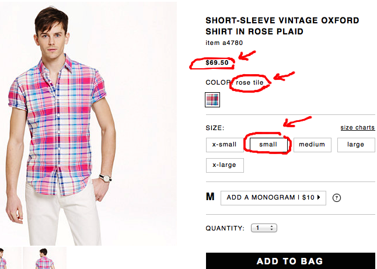

Fuzzy jQuery
Using jQuery’s built-in regex style operations for fuzzy matching.
I’m working on a web scraper that grabs information from product pages on popular retail sites. Typically, these sites use the same attribute names (like colorChoice or sizeChoice) for every product. This means one jQuery selector can pull all the data I need for every product on the site. Easy enough, right?
So, a few days ago, I wired in to work on this web scraper with my headphones blaring some filthy dubstep. I loaded a JCrew product page, popped open the inspector and started searching. As I dug deeper, I noticed something weird…
All the id attributes on the page had different names.
I checked other JCrew pages. The attributes were unique for EVERY. SINGLE. PRODUCT. on the site! It looked like this:

I wanted the web scraper to extract the colorChoice for each product on the site, but the unique id names would require thousands of different jQuery selectors. How the heck am I supposed to select by id if the attributes keep changing all the time?!
After banging my head against the wall for a few hours, I started researching. And researching. Finally, I learned something cool – jQuery can do fuzzy matches against partial, inexact and incomplete attributes. Sanity saved!
jQuery can do this with a few built-in regex-style operations. They look like this:
name^=”value” (Attribute starts with a “value”)
name$=”value” (Attribute ends with a “value”)
name*=”value” (Attribute contains a “value”)
name!=”value” (Attribute does not equal a “value”)
Because ids and classes are simple attributes, you can apply a regex attribute filter on the HTML above to get something like this:
$('span[id^=colorChoice_]')
which will return the attribute starting with colorChoice, like this…
<span id=""colorChoice_258740_432121"">Classic Navy Blue</span>
This will match every time for different products across the site, even when you don’t know the exact id name. Using fuzzy jQuery matching is a simple but powerful solution that will save you a ton of headaches. I know it did for me.
Keep in mind you’ll want to be as specific as possible. Otherwise, your jQuery will evaluate every div or span with a matching attribute, which I don’t recommend because your performance would suck.
Now that I have this trick in my jQuery toolbelt, I find myself reaching for it all the time – especially when I write scripts to evaluate data on web pages. I hope it helps you too!